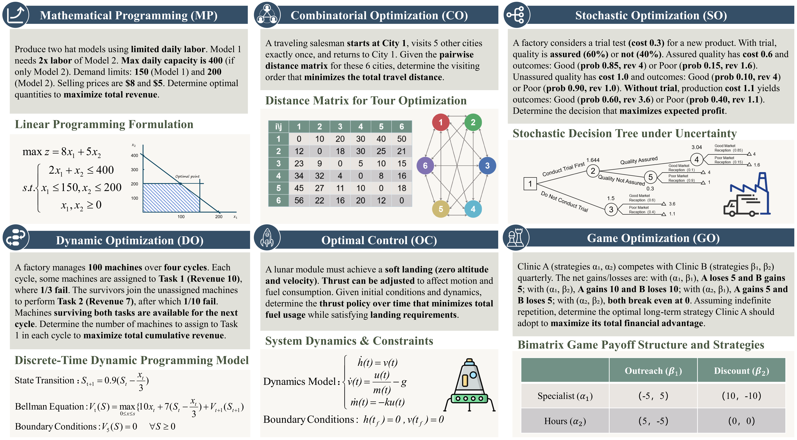
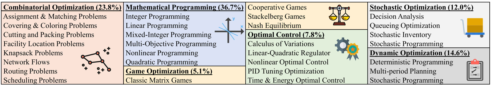
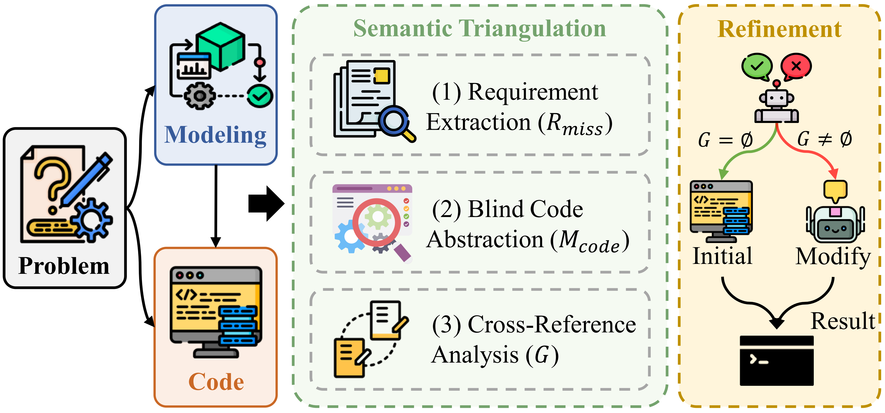
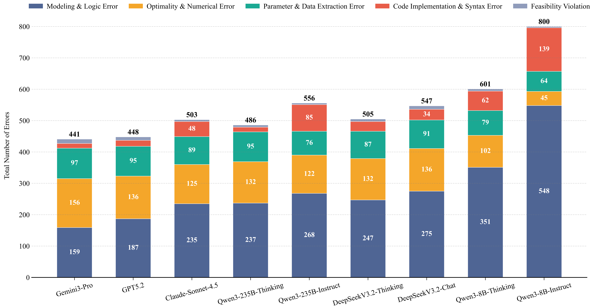

A Comprehensive Benchmark towards Optimization Problem Solving
While Large Language Models (LLMs) demonstrate remarkable reasoning capabilities, complex optimization tasks remain highly challenging. Existing benchmarks focus narrowly on Mathematical Programming and Combinatorial Optimization, hindering comprehensive evaluation.
To address this, we introduce OptiVerse, a comprehensive benchmark of 1,000 carefully curated optimization problems spanning six distinct and often neglected domains. Our extensive experiments with 22 LLMs reveal sharp performance degradation on hard problems, where even advanced models struggle to exceed 27% accuracy.

| Benchmark | Size | Table | Graph | Answer Form | MP | CO | SO | DO | OC | GO |
|---|---|---|---|---|---|---|---|---|---|---|
| ComplexOR | 37 | ❌ | ❌ | Scalar | ✅ | ✅ | ❌ | ❌ | ❌ | ❌ |
| NLP4LP | 269 | ❌ | ❌ | Scalar | ✅ | ✅ | ❌ | ❌ | ❌ | ❌ |
| MAMO | 863 | ✅ | ✅ | Scalar | ✅ | ✅ | ❌ | ❌ | ❌ | ❌ |
| OptiBench | 605 | ✅ | ❌ | Scalar | ✅ | ✅ | ❌ | ❌ | ❌ | ❌ |
| OptiVerse (Ours) | 1000 | ✅ | ✅ | Vector | ✅ | ✅ | ✅ | ✅ | ✅ | ✅ |

Error analysis reveals that Modeling & Logic errors remain the primary bottleneck across all LLMs. To address this, we propose the Dual-View Auditor Agent (DVA-Agent). Unlike simple syntax checkers, DVA-Agent acts as an adversarial evaluator using Semantic Triangulation:

We conducted an extensive empirical study evaluating 22 Large Language Models across varying scales (from 8B parameter models to flagship frontiers). We employ a robust two-stage LLM-as-a-Judge evaluation framework with a strict relative numerical error tolerance of ≤ 0.1%.

| Large Language Model | Domain | Difficulty | Avg. | |||||||
|---|---|---|---|---|---|---|---|---|---|---|
| MP | CO | SO | DO | OC | GO | Easy | Med. | Hard | ||
| Open-Source Non-Thinking Models | ||||||||||
| Qwen3-8B-Instruct | 23.98 | 22.69 | 20.83 | 14.38 | 6.41 | 13.73 | 42.67 | 12.25 | 7.67 | 20.00 |
| Qwen3-30B-Instruct | 38.96 | 36.13 | 31.67 | 34.25 | 19.23 | 15.69 | 70.33 | 21.75 | 14.00 | 34.00 |
| Qwen3-235B-Instruct | 44.41 | 47.06 | 45.83 | 41.10 | 42.31 | 41.18 | 78.33 | 39.75 | 16.67 | 44.40 |
| DeepSeek-V3.2-Chat | 51.23 | 47.48 | 45.00 | 43.15 | 21.79 | 35.29 | 79.67 | 39.25 | 19.00 | 45.30 |
| Open-Source Thinking Models | ||||||||||
| Qwen3-30B-Thinking | 49.59 | 46.64 | 46.67 | 46.58 | 30.77 | 43.14 | 80.67 | 40.00 | 20.33 | 46.30 |
| DeepSeek-V3.2-Reasoner | 53.68 | 52.52 | 45.00 | 49.32 | 28.21 | 49.02 | 84.33 | 44.50 | 21.33 | 49.50 |
| Qwen3-235B-Thinking | 53.68 | 51.26 | 49.17 | 52.74 | 43.59 | 49.02 | 87.33 | 47.00 | 21.33 | 51.40 |
| Closed-Source Models | ||||||||||
| Gemini-2.5-Pro | 53.68 | 49.16 | 50.00 | 47.95 | 38.46 | 43.14 | 87.00 | 43.75 | 20.00 | 49.60 |
| o3 | 52.04 | 53.78 | 45.83 | 56.85 | 39.74 | 45.10 | 86.67 | 47.25 | 20.67 | 51.10 |
| GPT-5.2 | 55.86 | 57.14 | 50.00 | 57.53 | 50.00 | 54.90 | 91.00 | 50.75 | 25.33 | 55.20 |
| Gemini-3-Pro | 58.04 | 57.14 | 56.67 | 56.85 | 42.31 | 50.98 | 89.00 | 52.75 | 27.00 | 55.90 |